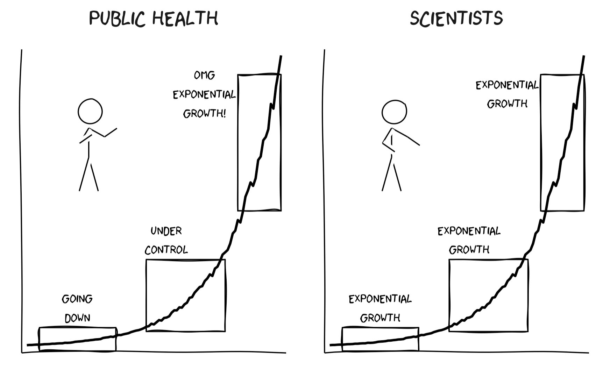

Chapter 10
Dr. Albert Bartlett's resources on exponential growth
Watch his talk Arithmetic, Population and Energy and get ready to have your mind blown! (seriously)
Dr. Bartlett also wrote numerous papers on exponential growth, many of which are collected in his book, The Essential Exponential!
examples of exponential growth
Nice video of folding paper as an exponential problem
Unsustainability of exponential growth
The unsustainability of exponential growth underlies many high impact analyses of our economy. A great example is the book, Limits To Growth, published in 1972. Many criticisms and updates to this book have also been published.
Social cost of carbon
Here and here are two good articles explaining the SCC and why it matters.
miscellaneous
This is a terrific article about the exponential growth of the power of artificial intelligence and why it might concern you.
A great cartoon about how people don’t understand exponential growth (source):
